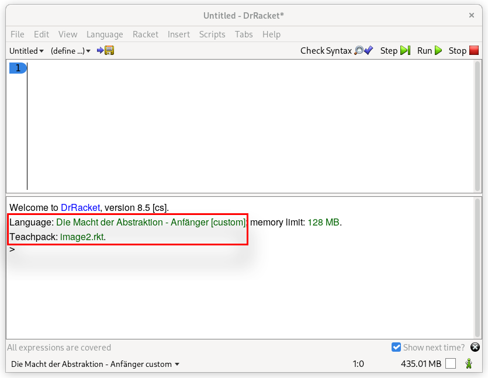

Ders Notları
Ders Videosu
DrRacket: Kurulum ve Ayarlar
İlk olarak aşağıdaki bağlantıyı kullanarak DrRacket programını indirelim, kuralım ve ayarlarını yapalım:
https://download.racket-lang.org/
DrRacket istenirse Almanca olarak da kullanılabilir.
Help > Deutsche Benützeroberflache für DrRacket > In Ordnung - Beenden
Bu ayarı yaptıktan sonra DrRacket programını yeniden başlatmanız gerekmektedir.
DrRacket, programlamaya giriş eğitimini kolaylaştırmak için bizlere yardımcı diller ve eğitim paketleri sunar. Şimdi bu ayarları yapalım:
Language > Choose Language > Die Macht der Abstraktion - Anfänger
Language > Add Teachpack > Image2.ss
Dil ve eğitim paketi seçtikten sonra Run tuşuna basarak yaptığımız değişiklikleri kullanıma alalım.

DrRacket 2 ayrı pencereden oluşur. Bunlar Definition Window (Tanımlama Penceresi) ve Interaktion Window (Etkileşim Penceresi) olarak adlandırılır.
Etkileşim penceresini kullanarak Racket dilini tanımaya başlayalım.
Basit Hesaplamalar
Etkileşim penceresini bir hesap makinası gibi düşünebilirsiniz. Haydi ona basit bir şeyler soralım:
42
Ya da:
3.141592653
Daha karışık bir soru:
(+ 40 2)
Yukarıda farkında olmadan ilk fonksiyon çağırımınızı yapmış oldunuz. + fonksiyonun adı, 40 ve 2 parametreleri.
Kural: Fonksiyonlar parantez içinde yazılır.
Kural: Fonksiyon adı parametrelerden önce yazılır. (Prefix Notation)
Kural: Fonksiyon adı ve parameteleri arasına boşluk karakteri yazılır. (function argument1 argument2 argument3 ...)
Daha Karmaşık Hesaplamalar
İç içe geçmiş, daha kompleks sorular da sorabiliriz.
(odd? (+ 40 2))
(+ (+ 20 20) (+ 1 1))
Kural: Hesaplar içeriden dışarıya doğru yapılır. En önce en içteki parantezin değeri hesaplanır. Daha sonra çıkan sonuç ile hesaba devam edilir.
Birlikte hasaplayalım:
5 + 10 / 2 - 2 * 4
Matematikte kural olarak çarpma ve bölme işlemi toplama ve çıkarmadan önce yapılır:
5 + (10 / 2) - (2 * 4)
Yukarıdaki hesaplamayı Racket dilinde yazmak istersek:
(- (+ 5 (/ 10 2)) (* 2 4)) # ya da
(* 5 (- (/ 10 2) (* 2 4)))
Sadece Sayılar mı var?
Racket dilinin yapı taşları arasında sayılardan başka türler de var.
Mesela aşağıdaki bir string (Metin):
"Fatih"
odd ingilizce de tek sayıları ifade etmek için kullanılıyor. odd? fonksiyonu ise Racket dilinde eğer verilen sayı tek ise #t (True: yani doğru), çift ise #f (False: yani yanlış) değerini dönüyor. #t ve #f değerlerini boolean (mantıksal değerler) denir.
(odd? 42)
Racket'da bulabileceğiniz bir başka değer ise image (Resim). Aşağıdaki ifadeyi çalıştırırsanız size 50 yarıçapında, içi dolu, kırmızı bir daire resmi üretir.
(circle 50 "solid" "red")
İPUCU: DrRacket etkileşim penceresinde
ESC+Ptus kombinasyonu ile en son yazdığınız satırı geri çağırabilirsiniz.
İşte bunlara Literals (Literale) ya da Constants diyoruz. Yani Yapıtaşları. En basit değerler. Daha fazla basitleştirilemezler.
| Literal | Signature | |
|---|---|---|
| #t #f | Mantıksal değerler (doğru, yanlış) | boolean |
| "Fatih" "x" " " | Yazı | string |
| 0 1983 -42 007 | Tam Sayılar | integer |
| 0.42 3.1415 -273.15 | Virgüllü sayılar | rational |
| ✰ | Resimler | image |
String turunu kullanarak da hesaplamalar yapabiliriz:
(string-append "Merhaba" "Fatih")
(string-append "Merhaba" " " "Fatih")
(string-length "Fatih")
(string->number "42")
Ya da resim kullanarak:
(circle 20 "solid" "red")
(rectangle 100 50 "outline" "blue")
(star 50 "solid" "red")
(above (circle 20 "solid" "red") (rectangle 100 50 "solid" "blue"))
(överlay (circle 30 "solid" "red") (rectangle 200 100 "outline" "black"))
Bknz: circle, rectangle, above, overlay, overlay/xy
İfadelerin İsimlendirilmesi: define
Yazdığımız ifadelere bir isim vererek onları daha sonra kullanabiliriz:
(define pi 3.141592653)
(define fatih-tel "+49 111222333")
(define mavi-daire (circle 100 "solid" "blue"))
(define gün-dakika (* 24 60))
(define ... ...) özel bir form. Bu form hesaplanan bir şey değil, bir efekti var. İkinci parametredeki ifadeyi birinci parametredeki isme bağlıyor.
(define isim ifade)
Kural: isimler ( ) [ ] { } " , ' ` ; # | \ karakterleri ile başlayamaz.
Kural: isimler bir sayı ile eşit olamaz
Kural: İsimler space, tab, return karakterleri içeremez.
Kural: daha önce başka bir değere bağlanmış olmamalı.
Kural: Büyük/küçük karakter farketmiyor.
Aşağıdaki örneğin yukarıdaki kurallara uyup uymadığına inceleyelim:
(define eu->us$ 1.02)
Alıştırmalar
Şimdiye kadar öğrendiklerimizi kullanarak Almanya'nın bayrağını yapmaya çalışalım. Siyah, kırmızı ve altın rengi olmak üzere 3 tane dikdörtgene ihtiyacımız var. Bunları üst üste koyarsak oldu demektir:
(define siyah-dikdortgen (rectangle 500 100 "solid" "black"))
(define kirmizi-dikdortgen (rectangle 500 100 "solid" "red"))
(define altin-dikdortgen (rectangle 500 100 "solid" "gold"))
(define alman-bayragi (above siyah-dikdortgen kirmizi-dikdortgen altin-dikdortgen))
Bu tanımlamaları yaptıktan sonra alman-bayragi isimli ifadeyi çalıştırırsak sonucu görebiliriz:
alman-bayrağı